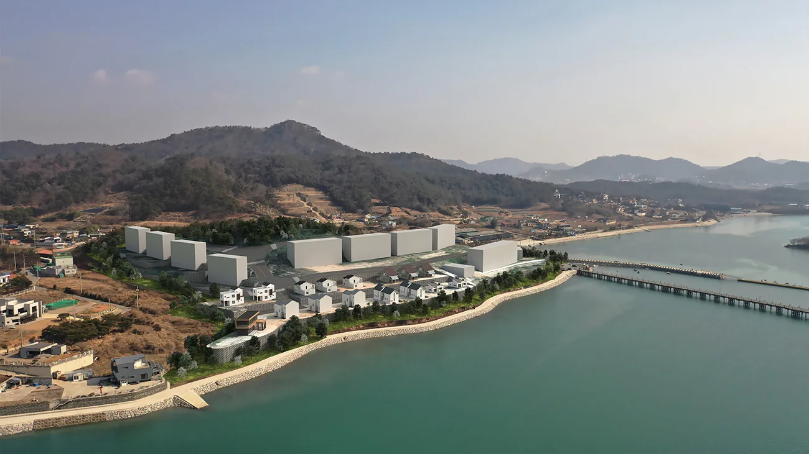
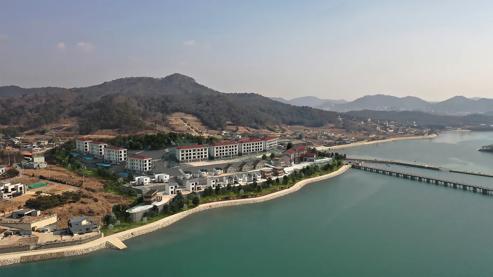
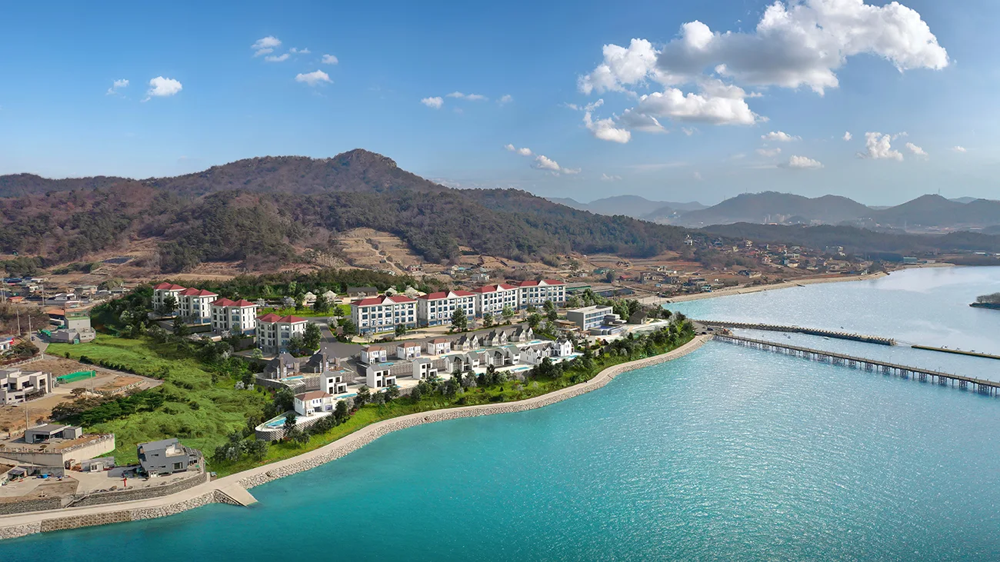

전남 무안군 삼향읍 왕산 부지에 랜드마크가 될 수 있도록 온천 스파 및 타운하우스 개발을 목적으로 기획 제안서 작성용 조감도를 요청해주셔서 제작하게 되었습니다.
지역 균형발전을 위해 지자체와 기업이 올바른 개발 사업을 진행할 수 있도록 양질의 조감도를 제작하고 그 과정중에 개선사항등을 검토 할 수 있도록 충분히 수정작업을 거칠 수 있도록 조감도를 제작하고 있습니다.
프로젝트의 진행과정

실제 현장 드론사진을 제공받아 드론사진에 맞게 카메라와 모델링을 진행하였으며, 실제 크기와 같은 1:1 비율의 모델링을 제작하였습니다.
초기에 진행하였던 조감도가 있었으나, 개발 과정에 수정과 변경을 거치며 새롭게 조감도 제작이 필요한 상황이였습니다. 변경된 배치와 건축물의 디자인을 적용하기 전 진행사항을 확인하실 수 있도록 보내드린 이미지입니다.



최종적으로 강변에 요트 선착장 까지 추가하여 결과물을 제작하여 납품하였습니다.
이상 메이크 그룹이였습니다. 감사합니다.
홈페이지
https://www.makegroup.co.kr/
블로그
https://blog.naver.com/makegroupcg